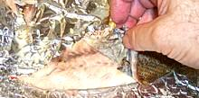

Baked fish
Cut skin edges
Remove skin

Butter knife helps
Lift fillet
One down
Remove bones, head
Remove all fins
Turn the fillet

Remove skin
Fillets
Procedure
There are a quite a few steps here but they aren't hard or time consuming. Of course that depends on how cooperative your fish is. The Pacific Red Snapper used as an example is medium cooperative though not the best.
- First you need to cook your fish. If you plan to dismantle it after cooking baking is usually the best cooking method to use. Make sure the fish will be done all the way through to the backbone or your fish will break up instead of coming free from the bones..
- With a sharp knife cut through the skin all around. This will help a lot because the skin is usually toughest at the edges.
- Bend back the gill covers so you can get at the front edge of the skin and peel it back. I suppose you could also start at the tail if you preferred. A butter knife will help get under the skin if you have any problems.
- Now you can lift off the fillet using the same technique you would use for a raw fish except you can do it with a thin turner - it should be very thin.
- Check the fillet and remove any bones, set it on a plate.
- Starting with the tail you can now remove the backbone along with most of the other bones. The head should come off with the backbone.
- Remove all the fins, both top and bottom, They will pull off easily.
- Clean up around the fillet and flip it over. You can now peel the skin off the second side.
- You should now have two fillets and some small fish meat fragments. The fillets will probably be of slightly different size because it's much easier to do the second side without pieces breaking off.
Hints
Know Your Fish:
Hints for many kinds of fish are on the "Details and Cooking" pages linked from our Varieties of Fish page (very large page). Some fish stay firm and manageable while others tend break up. If you intend to disassemble your fish into fillets before serving, selecting a fish that cooks firm is important.
Snappers, Mackerel, Trout are among the easy to dismantle fish. Croakers tend to break up.Is it Done?
Critically important is that the fish be done all the way through to the backbone or you'll just break it up trying to get the fillets loose.
Test: For a baked fish a good test is to pull out the dorsal (top) fin. If it doesn't pull out smoothly and easily the fish isn't done.
Tools
Knife:
You need a very sharp knife A filleting knife is preferable, but your normal kitchen knife is fine if it is very sharp.Turner
You need a very thin, flexible turner or you risk breaking up the fish trying to get under the fillet.